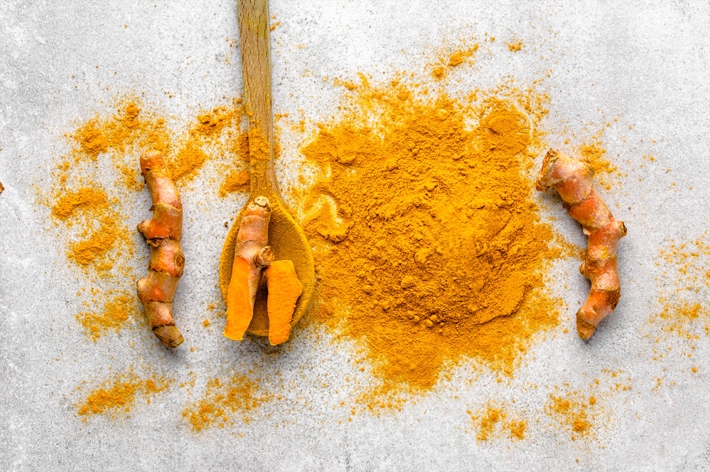
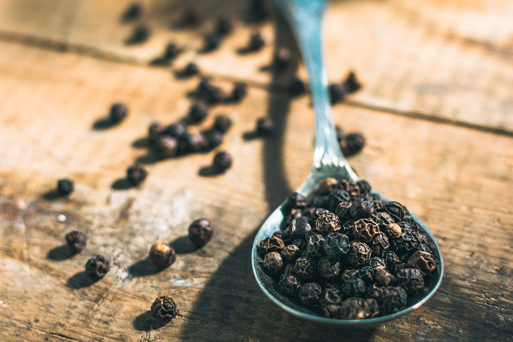
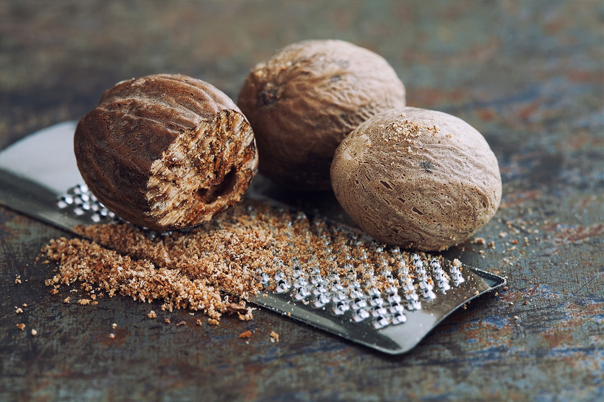
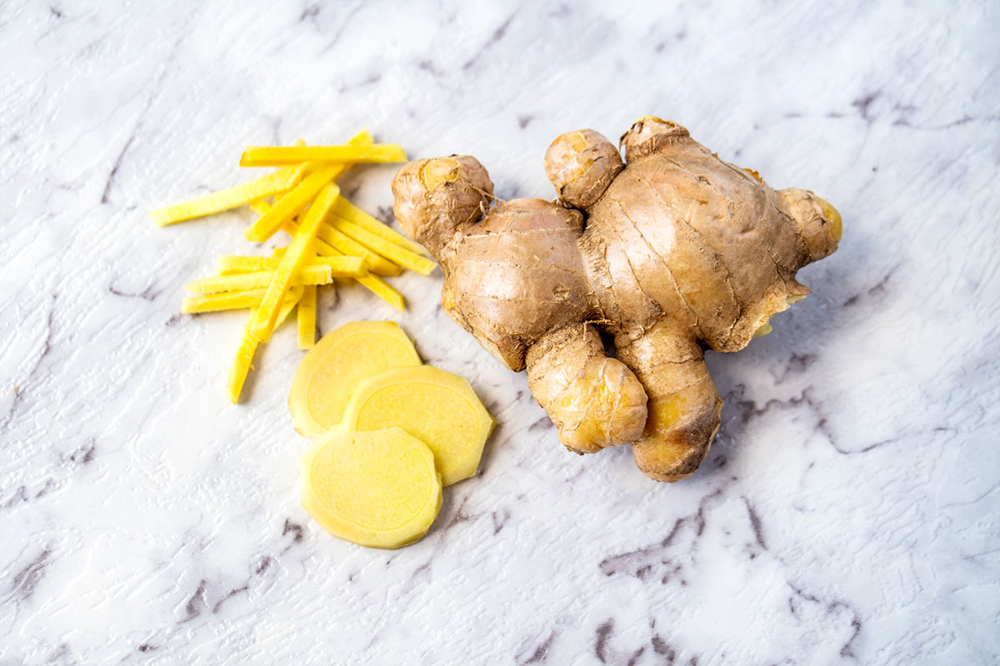
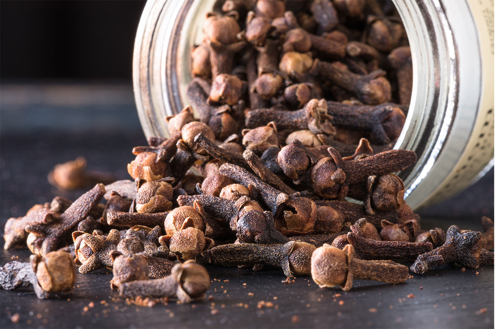
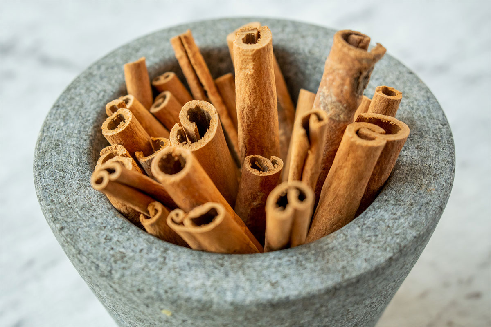
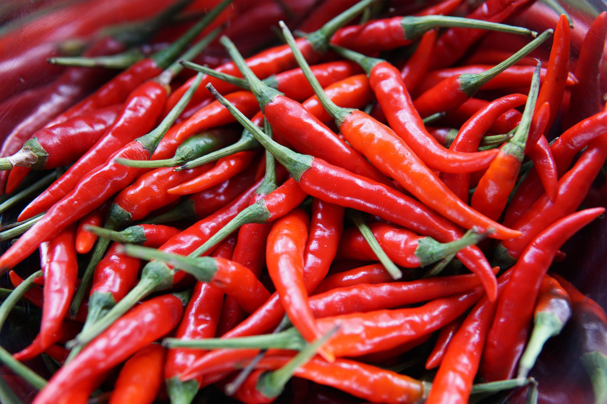
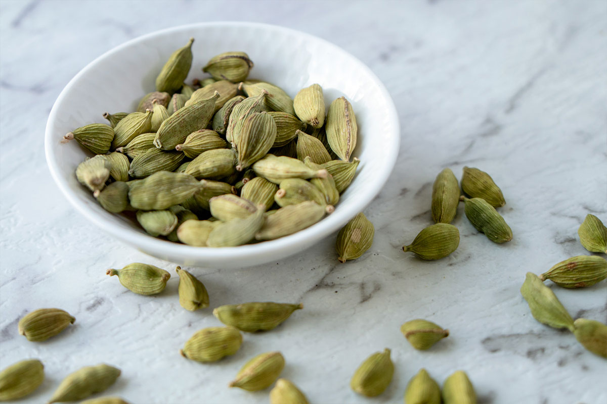

Common Asian Spices
-

TurmericA deep yellow rhizome native to India; boiled, dried and ground into a powder form that gives curries their savoury colour and peppery taste. Besides cooking, turmeric has played a key role in religious Hindu rituals since around 4000 years ago. It reached China by 700AD most likely via the Silk Road and remains an essential spice in traditional Chinese medicine; while more recently, turmeric chai latte has also become a popular treat in Hong Kong cafes.
-
 Star AniseNot to be confused with anise, which is an East Mediterranean flower herb with similar liquorice-like fragrance and sweet flavour; Star Anise is native to northeast Vietnam and southwest China, typically prized for its culinary uses in Asia, including Biryani rice, Masala Chai, Chinese five-spice powder and Vietnamese Pho. Its history dates back to 100BC; harvested from the star-shaped pod seed of its evergreen tree called Illicium Verum that takes at least 15 years to grow. It’s also used in traditional Chinese medicine - steeped in hot water to make tea for treating respiratory infections, nausea, constipation and digestive issues.
Star AniseNot to be confused with anise, which is an East Mediterranean flower herb with similar liquorice-like fragrance and sweet flavour; Star Anise is native to northeast Vietnam and southwest China, typically prized for its culinary uses in Asia, including Biryani rice, Masala Chai, Chinese five-spice powder and Vietnamese Pho. Its history dates back to 100BC; harvested from the star-shaped pod seed of its evergreen tree called Illicium Verum that takes at least 15 years to grow. It’s also used in traditional Chinese medicine - steeped in hot water to make tea for treating respiratory infections, nausea, constipation and digestive issues. -

PeppercornThe fiery spice that’s truly native to Asia isn’t chilli, but black pepper – used in Indian cooking since at least 2000 BCE, and is also widely grown in Southeast Asia. The original berries are actually green in colour, cooked and dried until they shrank into wrinkly seeds with black skin; thus named peppercorns. Favoured for its exquisite fragrance and spicy taste, it is used in stir-fried Asian dishes with meat, as well as curries.
-

NutmegSimilar to cloves, nutmeg is the dried fruit seeds from an evergreen tree native to the Molucca Islands; loved for its warm and mildly sweet taste. The fruit itself resembles an apricot, light yellow with red and green markings. As it matures, the outer flesh bursts to reveal the seed; which is then dried up to 2 months, before its shell is removed to the egg-shaped nutmeg within. It is used in Indian Mughlai cuisine for savoury dishes, as well as garam masala spice mix and Japanese curry powders.
-

GingerGinger is also a rhizome, first discovered in the southern parts of Ancient China about 500 BC – supposedly when Confucius flavoured his food with it in hopes of a long life. It then spread to India and Southeast Asia; brought to ancient Rome via Arab traders, and reintroduced to Europe again by Marco Polo after the Roman Empire fell. By the 5th Century AD, ginger was widely used in cooking, and grown in pots for sea voyages to preserve food, as well as to prevent scurvy. It is also a must-have ingredient in many Asian cuisines.
-

ClovePrized for its rich aromatic flavour, cloves were another war-inducing spice during colonial times, this one between the Dutch and the people of Molucca Islands, east of Indonesia; also known as the ‘Spice Islands’. However, like many Asian spices, cloves have reached China as early as the 3rd Century BC via a sea trade. Han Dynasty courtiers were known to freshen their breath with it before meeting the emperor; though elsewhere, it is mainly used for marinating meats, flavour curries, preserve fruits and enjoyed in hot beverages with lemon and sugar. Clove is also one of the spices in Chinese five-spice powder.
-

CinnamonNative to Sri Lanka, this incredibly fragrant spice plant is recorded in Chinese writings dating back to 2800 BC, and believed to have aphrodisiac powers, useful in treating coughs and sore throat, as well as to preserve and flavour meats. It had travelled as far as ancient Egypt, then later to medieval Europe; and was once so prized that its value was equal to silver. It started a long war between the Dutch, Portuguese and English during the 17th Century AD for control of Sri Lanka (then called Ceylon), which finally ended by the 1800s, after cinnamon was found to be easily grown in other places, including China and Southeast Asia. It’s also one of the core ingredients in Chinese five-spice powder.
-

ChilliChilli or capsicum fruits have been a part of the human diet since about 7500 BC. Although the oldest cultivated crop can be traced to South America, since its introduction to Asia by Portuguese traders in the 15th Century, chilli has become a nearly ubiquitous ingredient from China to Southeast Asia; grown and enjoyed in a myriad of zesty, delicious cuisines. In fact, China was the world’s largest producer of fresh green chilli in 2016; while India led the dried chilli peppers production – 36% of the world total.
-

CardamomNative to southern India, cardamom is one of the world’s oldest spices, dating back at least 4000 years with its uses recorded by Ancient Egyptians, though mainly for medicinal and ritual purposes. In Asia, cardamom is another main curry ingredient with unique minty flavour and is also often used to make a traditional tea. It’s usually pricey because the pods are harvested by hand.